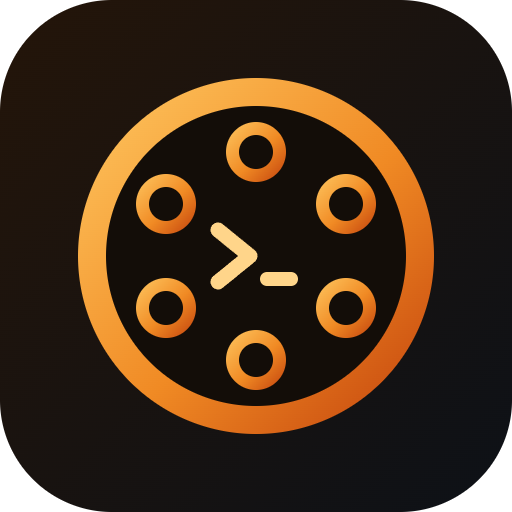
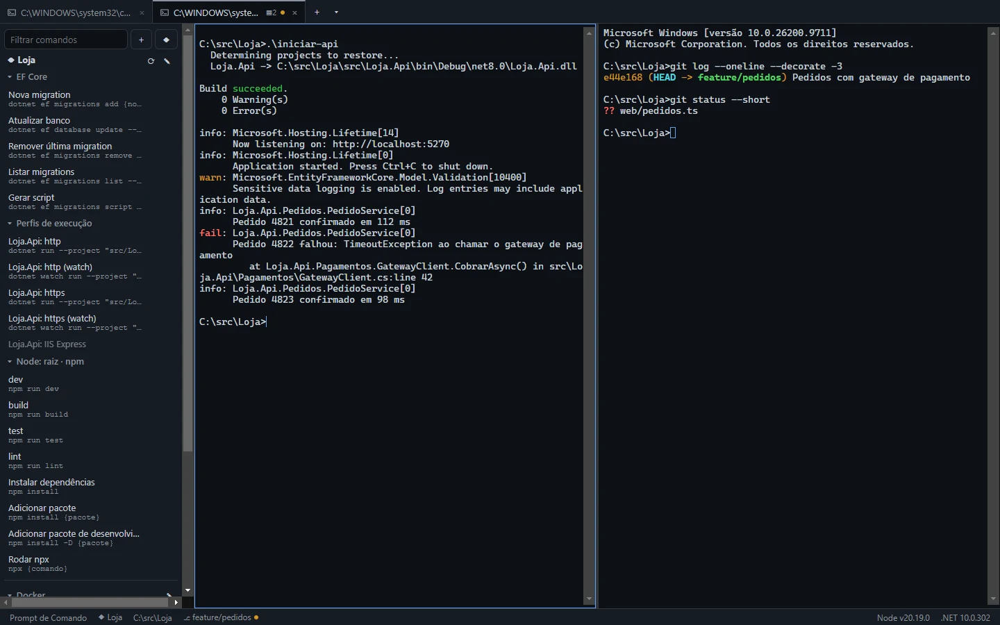
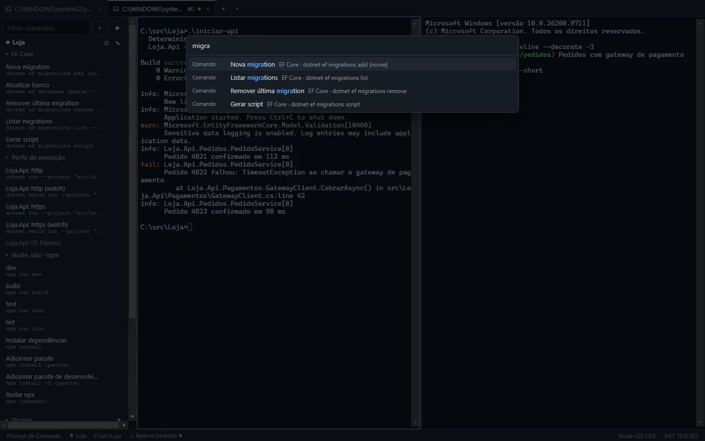
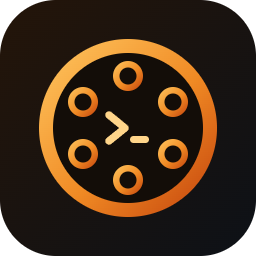

Abas com PowerShell, CMD, Git Bash, WSL e seus servidores SSH, comandos de EF Core e scripts do package.json a um clique, testes, Docker e portas no mesmo lugar, e uma barra de status com branch, Node e .NET da pasta em que você está.


Prints reais do app, com um projeto de demonstração.

Feito para quem alterna entre API .NET, front em Node, banco no Docker e terminal de Git o dia inteiro.
Servidores em grupos com herança, chaves e senhas cifradas pelo cofre do Windows, fingerprint conferido em toda conexão, host de salto e importação do ~/.ssh/config.
PowerShell, CMD, Git Bash e WSL detectados sozinhos, perfis customizados e abas elevadas com o sudo do Windows ou gsudo.
Comandos, scripts, projetos, workspaces e ações do app numa busca aproximada, sem acentos. Nada roda sem você confirmar.
Guarde git checkout {branch} e preencha na hora, com lista de opções e padrão. Organize por categoria.
Nova migration, atualizar banco, remover, listar e gerar script com o projeto e o startup certos, e o aviso se faltar o dotnet-ef.
Os scripts de cada package.json (monorepos inclusos) com o gerenciador detectado pelo lockfile.
Cada perfil de execução do ASP.NET vira dotnet run e dotnet watch com as URLs na descrição.
Painéis lado a lado e conjuntos de abas (API + front + shell livre) que abrem de uma vez, com comandos iniciais confirmados.
dotnet test, Vitest e Jest com resultado por teste, stack clicável, “rodar só este” e “rodar só as falhas”.
Quem está ouvindo em cada porta e de qual aba veio, encerrar com confirmação, e containers com logs e shell em abas novas.
Dev, Homologação e Produção com suas variáveis, cor na aba e confirmação obrigatória nos ambientes sensíveis.
Branch e alterações do Git, Node e .NET da pasta atual, erros e avisos destacados, e Program.cs(42,13) clicável no editor.
Interface e terminal com as suas cores, plugins só de dados (sem código) e um histórico local para desfazer qualquer mudança.
dotnet ef em 1 minutoSem cadastro e sem servidor: comandos, projetos e configurações ficam em arquivos JSON na sua máquina.
Baixe o Gunslinger-Setup.exe. A instalação é por usuário, sem pedir administrador.
Aponte para a pasta do repositório: o app encontra .csproj, soluções, package.json e o gerenciador de pacotes.
Ctrl+P, digite “migra” ou “dev” e Enter. O comando vai para o terminal certo, na pasta certa.
Versão 1.0.0 para Windows 10 e 11 (64 bits) · instalador 87 MB
Requisitos: Windows 10 (1809 ou mais novo) ou Windows 11, 64 bits. Para os recursos de .NET, o SDK do .NET; para os de Node, o Node.js. Se o SmartScreen exibir um aviso, clique em “Mais informações” → “Executar assim mesmo”: o instalador ainda não tem assinatura digital.

Sim. Baixe e use sem custo e sem cadastro.
Não. Tudo fica em arquivos JSON em %APPDATA%\Gunslinger. O app não envia seus dados para servidor nenhum (só se conecta aos servidores SSH que você mandar); o histórico de versões também é local.
No seu PC, cifradas pelo cofre do Windows (DPAPI) e ligadas à sua conta. Elas nunca aparecem na tela e nunca vão para arquivos exportados. Para usar o ssh-agent do Windows ou o Pageant, escolha o agente em Configurações → SSH e hosts conhecidos.
Não. A conexão é feita pelo próprio app. Se você já usa o OpenSSH, dá para importar os hosts do ~/.ssh/config e as chaves conhecidas do ~/.ssh/known_hosts.
Não. Nenhum comando salvo, script ou comando inicial de workspace é enviado ao terminal sem uma ação sua (clique, Enter ou confirmação).
Sim. A integração com o shell envolve o seu prompt sem alterar o $PROFILE, o .bashrc nem nenhum outro arquivo seu.
Por padrão eles são atalhos do app (fechar e abrir aba). Em Configurações → Atalhos você troca qualquer combinação, e a tela avisa quando uma delas conflita com o readline.
No menu ▾ de nova aba, use 🛡 Admin. Com o sudo do Windows (modo inline) ou o gsudo, a aba elevada fica dentro do app; sem eles, abre numa janela separada. A confirmação é sempre o UAC do Windows.
Ainda não. O Gunslinger é feito para o Windows (ConPTY, Registro, sudo do Windows). O WSL roda normalmente dentro dele.
O instalador ainda não tem assinatura digital, então o SmartScreen alerta na primeira execução. Clique em “Mais informações” e depois em “Executar assim mesmo”.